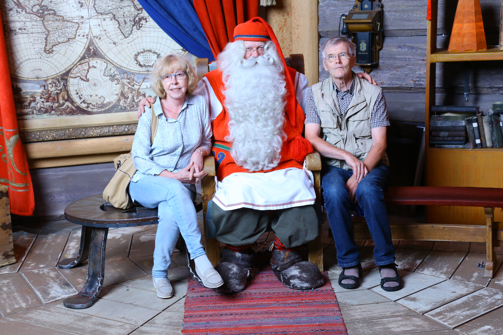

On Rovaniemi and Santa Claus
Why there are no old buildings in Rovaniemi
There are no old buildings in Rovaniemi. This is one of the consequences of World War II. For Finland, this war was a war against the Soviet Union, which inevitably means that Finland and Germany had a common enemy. Between 1941 and 1944 German troops trying to intercept the communications to the Russian Arctic See ports, operated from Lapland. A crucial condition in the cease fire agreement between Finland and the Soviet Union in September 1944 was that Finland had to expel the Germans from Lapland. This was eventually accomplished during the fall of 1944 and winter 1945.
The German troops did not withdraw easily. And a special retaliation by them was the almost complete destruction of all buildings and constructions. So after the war, everything had to be built again, virtually from scratch. A silent memorial of those sad times is the German military cemetery in Norvajärvi, 18 kilometers North of Rovaniemi. It is the final resting place of over 2500 soldiers.
Santa Claus in Rovaniemi
There seems to be some confusion about the home of Santa Claus. In North America, for instance, people generally believe that Santa lives in the North Pole and starts his journey with flying reindeer from there on Christmas Night.
In Finland, however, every child learns at an early age the real truth: Santa lives in Korvatunturi, (“Ear Mountain”) which is a mountain exactly on the border between Russia and Finland, at 68°5’N, 29°17’E. But this place is virtually inaccessible, so it is no wonder that Santa has set up his office close to highway E75, the route running all through Europe from Greece to Northernmost Norway. His chosen place is just at the point where the highway and the Polar Circle meet, a few kilometers north of downtown Rovaniemi. And the place is indeed so comfortable that Santa has chosen to stay there all year round. He likes to chat a bit with any visitor who likes to see him, and for a modest fee one can purchase photos and even a video of the meeting.
 There may be some among us who doubt the existence of Santa, but seeing him in flesh and blood will convince even the staunchest skeptic. The members of the BW Organizing Committee were fully convinced, anyway, as seen in the picture.
Around Santa’s quarters there is a village of shops, offering Christmas and Lapland related souvenirs, but also real Finnish design. A special feature is Santa’s Post Office. From there one can order a personal letter from Santa to a relative or acquaintance, to be delivered at Christmas. Nowadays this can be done also online, of course.
Santa’s Village actually grew around a small log cabin called Roosevelt’s Cottage. It got its name from Eleanor Roosevelt, the widow of US President Franklin D. Roosevelt. Mrs. Roosevelt had been active in the United Nations Relief and Rehabilitation Administration, which had aided the people of Lapland to resettle after the World War II. For her visit to Lapland in 1950, the cabin was hastily built (in two weeks, they say).